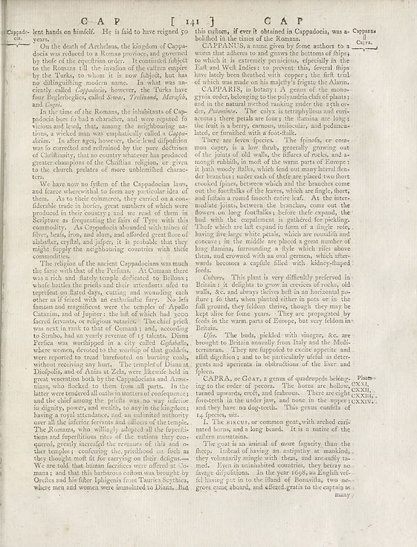

Capadocin. lent hands on himself. He is laid to have reigned so years. On the death of Archdelus, the kingdom of Cappa-docia was reduced to a Roman provinces and governed by thief of the equestrian order. I eveninted sub…
CAVPANUS, a must give by force authors to a woman that adhere to and grows the bottoms of flips to which it is extremely pericious, especially in the East and Well states to prevent this, several dips have intact been th…
CORPA, or GOAT, a genus of quadrupeds belongings to the order of pecors. The horna are hollow, tanned upwards, reefs, and fachoon. There are eight forecasted in the under joy, and soon in the upper upper and they have no…